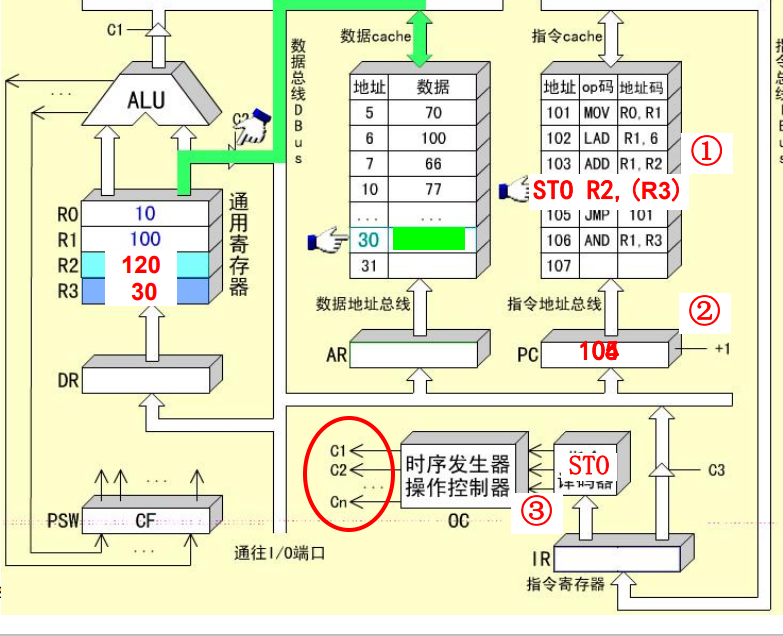
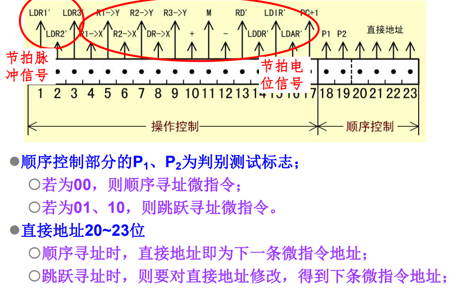
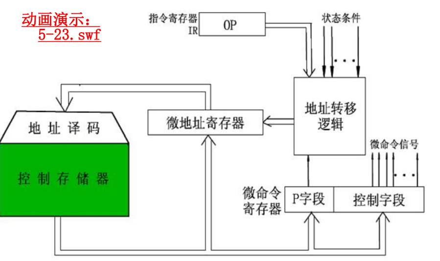
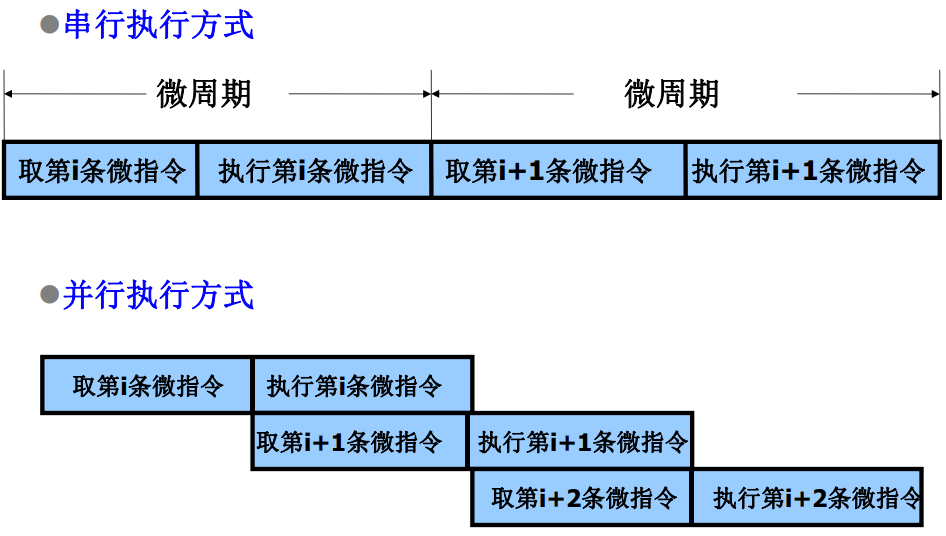

中央处理器
中央处理器的组成和功能
CPU的功能
中央处理器：控制程序按设定方式执行。
CPU的主要功能：
-
指令控制：顺序寻址和跳跃寻址
控制程序的执行顺序
-
操作控制：对指令操作码译码之后产生控制信号。
产生和发送各操作信号
-
时间控制：维持各类操作的时序关系
控制指令或操作的实施时间
-
数据加工：ALU完成具体的运算
对数据进行算术和逻辑运算
CPU的基本组成
现代CPU的组成：运算器、控制器、片内cache
控制器的主要功能：
-
从内存中取出一条指令，并指出下条指令的存放位置
PC，IR寄存器 -
对指令进行译码，产生相应的控制信号
-
控制CPU、内存和输入输出设备之间的数据流动
运算器的主要功能（ALU、DR、寄存器组）：
-
执行所有的算术运算
-
执行所有的逻辑运算并进行逻辑测试

CPU中的主要寄存器
-
数据缓冲寄存器DR
运算器使用。ALU的缓存，一切待运算数据先存放到DR，然后送入寄存器组，然后送给ALU
暂时存放ALU的运算结果或者CPU与外界传输的数据
-
作为ALU运算结果同通用寄存器之间的信息传送中时间上的缓冲
-
补偿CPU和内存、外围设备之间在操作速度上的差别
-
-
通用寄存器
如x86的%rsp、%rdi、%rax等
暂时存放ALU的运算结果或者运算数据
-
状态条件寄存器
PSW保存各种状态和条件控制信号，例如进位标志
C，溢出标志V每个信号由一个触发器保存，从而拼成一个寄存器
-
地址寄存器AR
存放待访存的地址。如（R1）则先将R1寄存器的值移到AR，然后根据此地址去内存（实为cache，但是可以当成内存）中读数，然后送DBUS、DR、PC等
保存当前CPU所访问数据的内存单元地址。
主要用于解决主存/外设同CPU之间的速度差异，使地址信息能够保持到主存/外设的读写操作完成
-
程序计数器PC
始终存放下一条指令的地址，对于指令Cache的访问
内容变化有着两种情况：
-
顺序执行：PC+1->PC
-
转移执行：指令->PC
-
-
指令寄存器IR
控制器使用。存放待执行指令，OP部分送去译码，然后给出控制信号，地址码部分送到DBUS
保存当前正在执行的指令
指令寄存器中操作码字段的输出就是指令译码器的输入
操作控制器与时序产生器
数据通路：寄存器之间传送信息的通路
操作控制器：根据指令操作码和时序信号，产生各种操作控制信号。建立正确的数据通路，从而完成指令的执行。
-
硬布线控制器：利用时序逻辑实现
-
微程序控制器：采用存储逻辑实现
-
前两种方式的结合
时序控制器：对各种操作实施时间的限制。
指令周期
指令周期的基本概念
CPU执行程序是一个”取指令-执行指令“的循环过程。
指令周期：CPU从内存中取出一条指令并执行的时间总和。
CPU周期：机器周期，一般为从内存中读取一条指令字的最短时间。一个CPU周期可以完成CPU的一个基本操作。
时钟周期：也叫节拍脉冲或者T周期，是计算机处理操作的基本时间单位。
一个完成的指令周期由若干机器周期构成：
取值周期->间值周期->执行周期->中断周期
本教材上间址周期和执行周期统称为执行周期。
MOV R0, R1指令的指令周期
mov是一条RR型指令，它需要两个CPU周期。
-
取值周期：从储存器中取出指令，程序计数器加1，译码或者测试指令操作码，输出控制信号。
-
PC->指令Cache, 译码并启动
-
指令Cache->ABUS->IR
-
PC->PC+1, 为取下一条指令做好准备
-
IR中的操作码被译码或者测试，识别出是指令
mov
-
-
执行周期：在控制信号的作用下，将R1中的数据通过ALU送入R0
-
R1->ALU, 数据是通过ALU传送的
-
ALU->DBUS->DR->R0
-

LAD R1, 6指令的周期
LAD指令是RS型指令，需要方寸获取操作数，共包含三个CPU周期。
-
取值周期
-
间址周期：从IR的地址码字段获得操作数的地址
-
IR->DBUS->AR 该过程为寻址周期
-
AR->ABUS->数据cache 译码并启动
-
数据cache->DBUS->DR->R1
-
-
执行周期：访存获取操作数送入通用寄存器

ADD R1, R2指令的指令周期
ADD指令的指令周期由两个CPU周期组成。
-
取值周期
-
执行周期
-
R1, R2 -> ALU
-
ALU 进行加运算，将两数相加
-
ALU->DBUS->DR->R2，保存结果
-

STO R2, (R3)指令的指令周期
STO指令是RS型指令，需要3个CPU周期。
-
取值周期
-
间址周期：根据R3中的地址寻址所要访问的存储单元
-
R3->DBUS->AR, 发送地址启动数据Cache
-
R2->DBUS->数据Cache
-
-
执行周期：将寄存器R2中的数据送入指定的存储单元

JMP 101指令的指令周期
JMP指令是一条无条件转移指令，用来改变程序的执行顺序
-
取值周期
-
执行周期：使用
JMP指令中的直接地址为PC赋值IR->DBUS->PC

用方框图语言表示指令周期
方框：代表一个CPU周期，内容表示数据通路的操作或者某种控制操作
菱形：通常表示某种判别或者测试，时间上依附于之前一个方框的CPU周期，而不单独占用一个CPU周期
公操作符号~：表示一条指令已经执行完毕，转入公操作
所谓公操作就是对一条指令执行完毕之后，CPU所开始的一些操作，比如对外围设备请求的处理等
微程序控制器
微程序控制原理
微命令和微操作
是控制部件和执行部件之间的联系，包括发出控制信号和返回状态信息。
-
微命令：控制部件通过控制线向执行部件发出的各种控制命令
-
微操作：执行部件接受微命令之后执行的操作
-
状态操作：执行部件通过反馈线向控制部件告知当前状态，方便决定下一步的操作
微命令就是控制电路中一个个不同的控制信号。
微操作可以分为：
- 相容性微操作：在同时/同一个CPU周期内可以并行执行的微操作
- 相斥性微操作：不能在同时或不能在同一个CPU周期内并行执行的微操作
微指令和微程序
微指令：在一个CPU周期内，实现一定操作功能的一组微命令的组合。
- 操作控制：用于管理和指挥全机工作的控制信号
- 顺序控制：用于决定产生下一条微指令的地址
微指令都在存储控制器中存储，使用地址微地址访问。
每段机器指令都对对应这一段微程序，而微程序就是实现一条机器指令的多条微指令序列。
微指令的基本格式

微程序控制器原理

- 取指微指令是所有指令的公用微指令，通常存放在
0000的位置，所有机器指令的最后一条微指令的直接地址都指向这个地址单元，用来取下一条微指令。 - 取得机器指令之后，经过
p1测试——操作码测试，产生对应的微程序入口指令，并送入微地址寄存器。 - 指令执行的过程中，通过
p2测试，修正下一条微指令的地址，逐条读取微指令执行。 - 执行完对应于一条机器指令的微程序之后，返回到取值微指令，不断重复知道程序执行完成。
机器指令与微指令的关系
一条机器指令对应一个微程序，一个微程序由若干条微指令序列组成的。
指令存储在内存中，而微指令存储在控制存储器中。
每一个CPU周期对应一条微指令。
微程序设计技术
微命令编码
微指令中操作控制字段的编码表示方法，以及如何将编码翻译到对应的微指令。
采用编码表示微指令的原因主要是：
- 有效缩短微指令字长
- 缩短微程序的长度，减小所需的空存空间
- 提高微程序的执行速度
一般常用的微命令编码方式有以下三种：
-
直接表示法
操作控制字段中的每一位代表一个微命令。
简单直观，输出直接用于控制，执行速度快。但是微指令比较长，似的控制存储器的容量必须比较大。
-
编码表示法
将微指令操作控制字段划分为若干个子字段，将每个子字段的所有微命令统一编码，每个子字段的不同编码表示不同的微命令。
其中设计编码还需要满足下面这些要求：
- 把相斥的微命令划分到同一个字段，相容的微命令划分到不同的字段。
感觉设计子字段的目的就是为了方便相容指令的并行
- 字段的划分应该和数据通路相吻合
- 每个子字段应该留出一个空操作状态
- 每个子字段所定义的微命令不宜太多
使用这种方式可以大大缩短微指令的字长，但是在执行过程中需要对微命令进行译码，所以执行的速度会较慢。
微地址的形成方法
- 微程序的入口地址：微程序的第一条微指令所在控存单元的地址
- 现行微指令：在执行微程序的过程中，当前正在执行的微指令，这个指令的地址就是先行微地址
- 后继微地址：现行微指令执行完之后再执行的微指令地址
确定下一条微指令地址的方法：
-
计数器方式
同CPU中程序计数器产生机器指令地址的方法类似。
这样微指令的顺序控制字段较短，微地址产生结构简单，但是多路并行转移的功能比较弱，速度慢，灵活性差。
-
根据判断测试标志和状态条件信息选定某一个候选微地址的方法。
这种方法能够以较短的顺序控制字段配合，实现多路并行，灵活性比价好，速度快，但是转移地址的逻辑需要比较复杂的组合逻辑实现。
微指令格式
微指令格式有以下两种：
-
水平型微指令：
一次能定义并执行多个并行操作微命令的微指令。一般有操作控制字段，判断测试字段和下地址字段构成。
根据控制字段编码方式不同，可以分为全水平型，字段译码水平型和直接译码混合型。
-
垂直型微指令
类似于机器指令的结构，设置微操作码字段，采用微操作码编译法，由微操作码规定微指令的功能。
水平型微指令并行操作能力比较强，执行一条指令的时间段，而垂直型微指令则较差。
但是由水平型微指令解释指令的微程序，微指令字比较长但是程序短，而垂直型刚好相反。
垂直型微指令和指令相似，利于用户掌握。
动态微程序设计
-
静态微程序设计：
对于一台计算机的机器指令只有一组微程序，而且设计好之后，无需改变也不易改变。
-
动态微程序设计：
通过改变微指令和微程序来改变机器的指令系统
硬布线控制器
直接用组合逻辑完成从指令到微命令的控制器。
同微程序控制器相比，硬布线控制器更快。
流水线CPU
并行处理技术
并行性具有两种含义：
- 同时性：两个以上事件在同一时刻发生
- 并发性：两个以上事件在同时间间隔发生
并行性具有三种形式：
- 时间并行：使用流水处理部件，时间重叠
- 空间并行：设置重复资源，同时工作
- 时间并行和空间并行
对于微指令来说：

流水CPU的结构
流水计算机的系统组成
指令部件：本身构成一个流水想，由取指令、指令译码、计算操作数地址、去操作数等过程段组成。
指令队列：指令队列是一个先进先出的寄存器队列，用于存放经过译码的指令和取来的操作数。
执行部件：执行部件可以具有多个算术逻辑运算部件，这些部件本身又用流水线方式构成。
主存采用多体交叉存储器，以提高访问速度。
执行段的速度匹配问题：
将执行部件分成定点执行部件和浮点执行部件两个可并行执行部分，在浮点执行部件还可以分成浮点加法部件和浮点乘除部件，他们也可以同时执行不同的指令。
浮点运算部件本身也是流水线。
这样基本上解决了执行速度不匹配的问题。
流行CPU的时空图
流水线具有下面三种特点：
- 一般流水线
pipeline：只有一条指令流水线 - 超流水线
superpipeline：多级流水线，每个阶段内部还可以继续划分 - 超标量流水线
superscale：具有两条以上的指令流水线

流水线分类
流水线可以分成以下三类：
-
指令流水线：指令执行的并行处理。
指令流水线可以划分成取值、译码、取操作数、执行和写回等等过程。
-
算术流水线：在运算步骤中的并行处理
为了提供速度，现代计算机多采用流水的算术运算器，而不是传统的组合逻辑。
-
处理机流水线：程序步骤的并行处理。
将每一阶段的处理分散在不同的计算机上。
流水线中的主要问题
在设计流水线CPU是，会遇到不少的问题，我们分成几个不同的类别来查看。
-
资源相关的问题：
多条指令进入流水线后在同一机器时钟周期内争用同一个功能部件造成的冲突。
解决这类问题的思路：
- 推迟指令的执行
- 设置重复的资源
-
数据相关的问题：
在一个程序中，必须等待上一条指令执行完毕之后才能执行下一条指令，例如下一条指令使用了上一条指令得到的结果。
数据相关有着三种不同的类型：
- 先读后写：前一条指令读取某一个数据，后一条指令写入这个数据，但是在异步执行的过程中，后一条指令写入数据可能会发生在前一条指令读取数据之后，造成程序执行错误。
- 写写：前后两条指令都会写入同一个数据单元，但是由于在异步执行的过程中后一条指令可能优于前一条指令执行，导致最后该数据单元的数据和期望的不同。
- 先读后写类似。
解决这类问题的思路：
- 推迟指令的执行
- 定向传送技术
-
控制相关的问题：
在执行转移指令是，根据转移条件是否发生来控制指令的执行顺序。
解决这类问题的思路：
- 延迟转移法
- 转移预测法